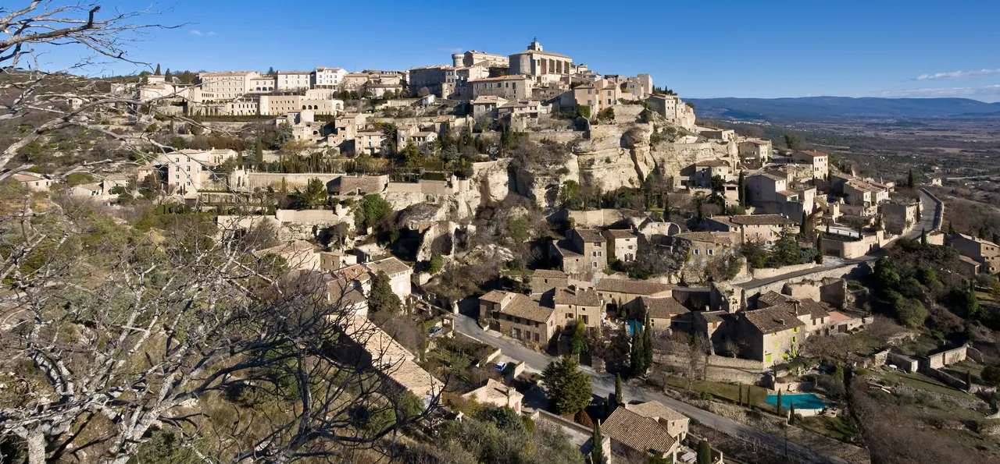

Gordes

| 지역 | Luberon |
|---|---|
| 등급 | Must |
| 언제 | Day 18 · 9/15시간표 기준 |
| 상세 | 챕터 본문에서 보기 |
| 지도 | Luberon 실행지도 · 핀 이름 Gordes |
참고
오프라인입니다. 위키백과와 지도 링크는 연결되면 다시 동작합니다.
절벽 위에 돌로 쌓아 올린 뤼베롱의 대표 화면이다. 마을 전체가 언덕 사면에 계단식으로 붙어 있고, 원경(전망대에서 보는 마을 전체)과 근경(골목의 마른돌 벽)이 완전히 다른 경험이다. 마을 초입 도로변 전망대가 그 유명한 사진의 촬영 지점이고, 오후 빛에는 마을이 역광이 되므로 오전 통과가 원칙이다.
무엇인가
바위 봉우리 위에 지어진 마을로, 갈로-로마 시대부터 방어의 기능을 가졌다. 중세 이래 종교전쟁과 침략을 피한 사람들의 피난처였다. 성은 1031년에 지어졌고 12세기에 부벽이 있는 교회가 뒤따랐다.
옛 성은 관람 가능하며 현대미술 센터로 바뀌었다.
⚠ 화요일 시장 — 주차가 이 날의 승부처다
고르드 시장은 화요일 8:00–13:00이다.
9월 15일이 화요일이다.
화요일 당일치기를 계획한다면 — 시장일이다 — 일찍 가라. 주차장이 매우 빨리 찬다.
이 한 문장이 Day 18의 전부다. 8시대 도착을 목표로 잡는다.
관람 요령
마을에 들어가기 전에 밖에서 봐라 고르드의 대표 이미지는 마을 안이 아니라 접근 도로의 전망점에서 나온다. 계단식으로 쌓아 올린 석조 마을의 형태는 안에 있으면 안 보인다. 풍경으로 먼저 보는 상징마을이다.
세낭크로 가는 길 고르드를 떠나 D177을 타면 아래쪽 수도원의 아름다운 조망이 열린다.